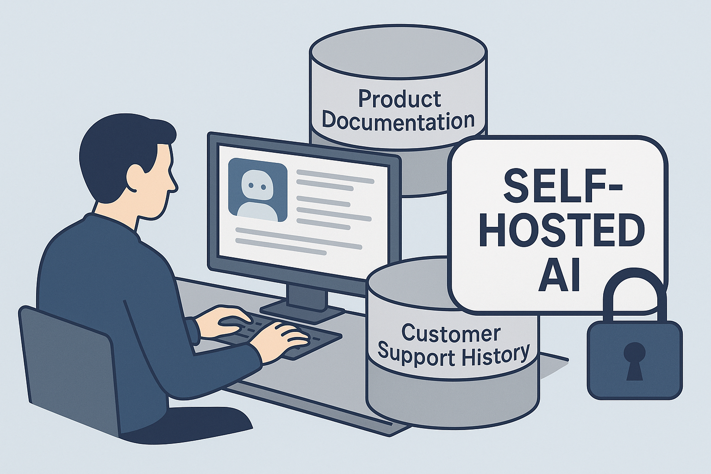
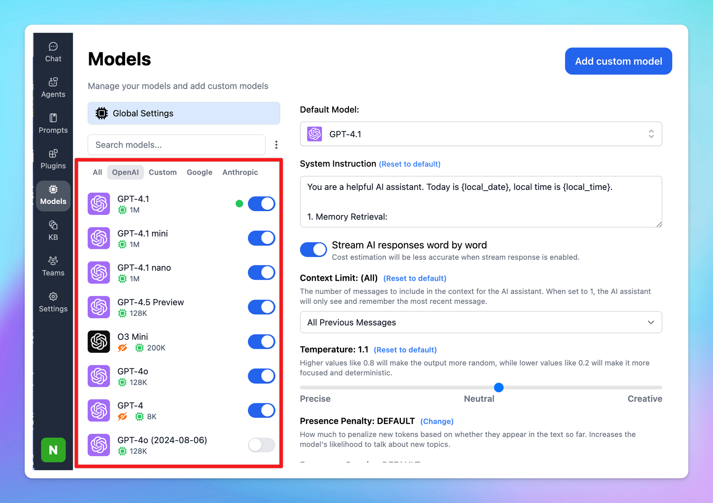
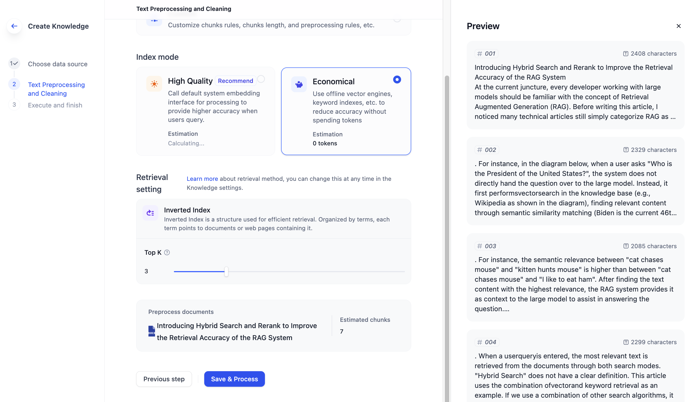

Case Study: Building a Fully Self Hosted, GDPR Compliant RAG Pipeline
When I started working with this client group, the brief was simple. They wanted a way for people across the organisation to query product knowledge directly, without trawling through manuals, PDFs, or wikis. The idea was that if all the product documentation could be made searchable through an AI interface, staff would be able to answer questions much more quickly.
From there the project expanded. We realised that product documentation was only half of the story. Six years of support ticket history contained a wealth of practical knowledge about how the products worked in real situations. Adding that history would make the AI much more useful. But it also raised difficult questions about privacy and GDPR.
What started as a straightforward experiment with product manuals turned into the development of a fully self hosted AI platform. It now delivers a private, compliant, and practical way of combining official documentation with lived knowledge from real customer support.
Starting point: TypingMind and OpenAI APIs
The first step was TypingMind, a third party tool that provides a RAG pipeline over commercial large language models such as OpenAI. It worked well for product manuals and training documents, and the licensing model was simple: a per-user fee, a cost per million characters of training data, and a usage cost for every API call.
For this stage, it was fine. Product PDFs, web guides, and manuals could be ingested quickly. But we wanted more than just official documentation. Support tickets offered real-world context that the manuals did not. And the moment support data entered the conversation, GDPR became the central issue. Sensitive personal information could not be sent to OpenAI or any other cloud provider. That was when the case for self hosting became unavoidable.
PrivateGPT: the first self hosted option
The first self hosted system we tried was PrivateGPT. This is an open source Python application with a Gradio front end that lets you upload documents locally, create embeddings, and query them against a local model. On my laptop it worked, albeit slowly.
The hosting provider purchased a Mac Mini and deployed it in their data centre. This turned out to be a smart choice, because Apple's optimisation for AI workloads means that Mac Minis can run open source models surprisingly well. PrivateGPT gave us the first working example of a self hosted AI capable of handling product documentation.
But PrivateGPT had limits. It lacked authentication, had no support for multiple users, and was not built with enterprise scale in mind. It proved that a local approach could work, but it could not take us the whole way.

Building our own pipeline
The next step was to try writing my own RAG pipeline.
The first attempt was very much vibe coding. I wrote prompts describing the system I wanted, and the AI generated scripts. It felt promising at first, but the results were brittle. Some parts worked until they didn't, and other parts were hallucinated entirely.
The second attempt was more structured. I introduced Haystack, thought about the architecture carefully, and created something functional. But again, I found myself chasing edge cases and writing a lot of glue code. It quickly became clear that I needed a better platform.
The breakthrough with Dify
That platform turned out to be Dify. Dify is a low code system for building AI applications, and it immediately solved many of the problems we were hitting. It provided a clean web UI for managing documents, handled embeddings and vector databases, integrated easily with Ollama for local model hosting, and gave us control over model settings such as temperature to reduce hallucinations.
Most importantly, this was the point where choosing and testing the right models for the hardware became essential. The Mac Mini had enough power, but not for everything. Some models were simply too large to run effectively. I spent significant time testing combinations until I found the right balance.
I settled on Mistral 12B for completions and a smaller embedding model for ingestion. The smaller model kept ingestion fast, while the larger one provided strong answers. This combination was reliable on the available hardware and gave us the performance we needed.
Expanding beyond documentation: support data
With the product manuals working well, the next challenge was integrating support ticket history. This data was far less structured and much harder to handle.
One product had a proprietary helpdesk system that only exported the first and last message in each ticket. I had to write scripts to crawl the database and reconstruct the missing conversations. Another product used Microsoft SQL. Another had no ticketing system at all and relied on email.
Each source required bespoke ETL pipelines to transform the raw conversations into clean markdown that Dify could ingest. Adding this layer of history meant that staff could not only query official product documentation but also see the context of real issues that customers had encountered and how they were solved.
The delivered system
The final solution was a set of self hosted chatbots, all running on servers inside the client's data centre.
- Product knowledge chatbots, trained on manuals, guides, and documentation.
- Support-augmented chatbots, which layered six years of ticket history on top of the official documentation.
- A compliance chatbot, loaded with ISO 27001 information, security policies, and audit responses.
Everything ran behind password protected web interfaces, with the AI engine completely isolated from the internet. Sensitive data never left the environment, ensuring GDPR compliance at every step.
Lessons learned
Several lessons stand out from this project.
- GDPR is not optional. Compliance drove the decision to self host and shaped every technical choice.
- Model choice is critical. Testing combinations of models against the available hardware made the difference between a system that was a slow demo and one that was genuinely usable.
- ETL matters. Product manuals are relatively easy to ingest, but real-world support data needs serious preprocessing to become useful.
- Low code can accelerate delivery. Dify provided the stability and polish that let us stop chasing edge cases and focus on delivering value.
- Start broad, then augment. Beginning with documentation and layering support history on top created a richer and more balanced knowledge base.
Closing thoughts
This project began as a way to make product documentation more accessible. It evolved into a self hosted, GDPR compliant AI platform that combined official product knowledge with years of real world experience from support tickets.
The real value came from putting those two sources together. Documentation provided the baseline, and support history provided the context. Choosing the right models for the hardware and building robust ETL pipelines turned the idea into something practical.
The result was a system that delivered fast, accurate, and private answers to staff across the organisation, without ever sending sensitive data outside the firewall.